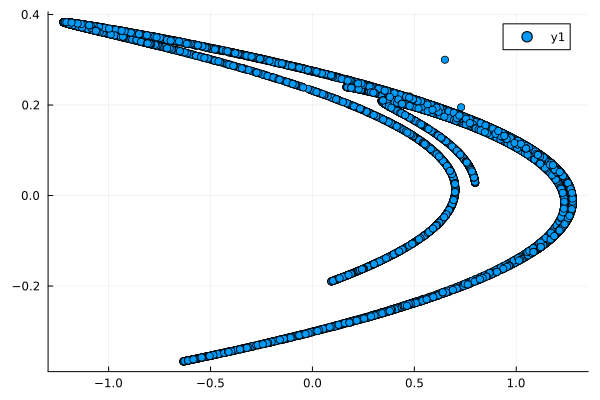
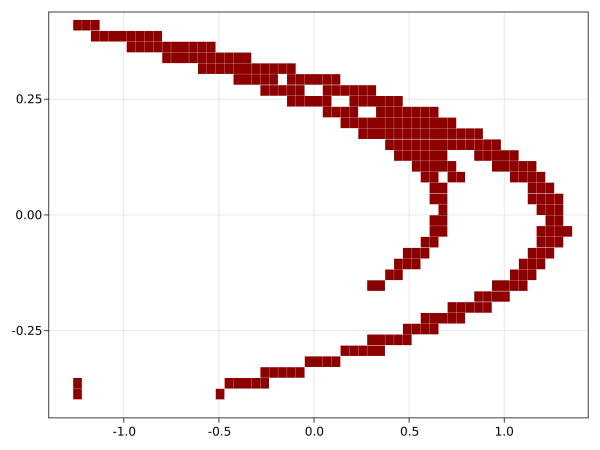

Getting started
julia> const a, b = 1.35, 0.3(1.35, 0.3)julia> f((x,y)) = ( 1 - a*x^2 + y, b*x )f (generic function with 1 method)
Iterating some random intial point exhibits a strange attractor
julia> orbit = NTuple{2, Float64}[]Tuple{Float64, Float64}[]julia> x = (1, 1)(1, 1)julia> for k in 1:10000 x = f(x) push!(orbit, x) end
julia> using Plotsjulia> p = scatter(orbit)Plot{Plots.GRBackend() n=1}

This map is chaotic [2], [3], it has sensitive dependence on initial conditions. That is, small perturbations (as unavoidable on a computer) during the computation grow exponentially during the iteration. Thus, apart from a few iterates at the beginning, the computed trajectory does not (necessarily) follow a true trajectory. One might therefore question how reliable this figure is.
Instead of trying to approximate the attractor by a long forward trajectory, we will capture it by computing a collection of boxes (i.e. cubes) covering the attractor.
Start by loading the GAIO package
julia> using GAIO
A Box is descibed by its center and its radius
julia> box_center, box_radius = (0,0), (3,3)((0, 0), (3, 3))julia> Q = Box(box_center, box_radius)Box{2, Float64}: center: [0.0, 0.0] radius: [3.0, 3.0]
This box will serve as the domain for our computation. The box covering which we will compute is a subset of a partition of Q into smaller boxes. The command
julia> P = BoxPartition(Q, (4,4))4 x 4 - element BoxPartition
yields a partition of Q into a grid of 4 x 4 equally sized smaller boxes. Note that this command does not explicitly construct the partition (as a set of subsets covering the domain Q) but rather serves as a $\sigma$-algebra for constructing sets of boxes later. For example, the commands
julia> test_points = [ (1, 1), (2, 1) ];julia> B = cover(P, test_points)2 - element BoxSet in 4 x 4 - element BoxPartition
yields a BoxSet containing boxes from the partition P which cover each of test_points. Similarly,
julia> B = cover(P, :)16 - element BoxSet in 4 x 4 - element BoxPartition
yields a BoxSet containing all boxes from the partition P (i.e. a set containing 16 boxes).
In order to deal with the Hénon map f as a map over box sets, we have to turn it into a BoxMap on the domain Q
julia> F = BoxMap(f, Q)SampledBoxMap with 5 sample points
We can now compute a covering of the attractor in Q, starting with the full box set B, by applying 15 steps of the subdivison algorithm described in [4]:
julia> A = relative_attractor(F, B, steps = 19)21055 - element BoxSet in 2048 x 4096 - element BoxPartition
julia> p = plot(A)Plot{Plots.GRBackend() n=1}

In addition to covering the attractor, this box collection also covers an unstable fixed point near (-1,-0.3) and its unstabe manifold (cf. [4]).